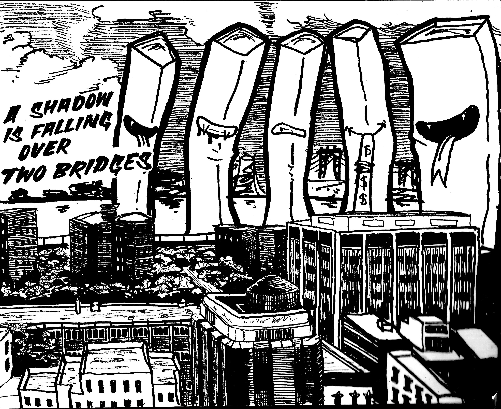
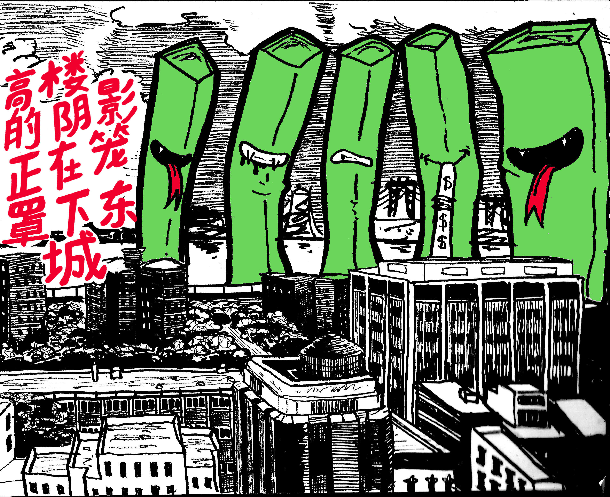
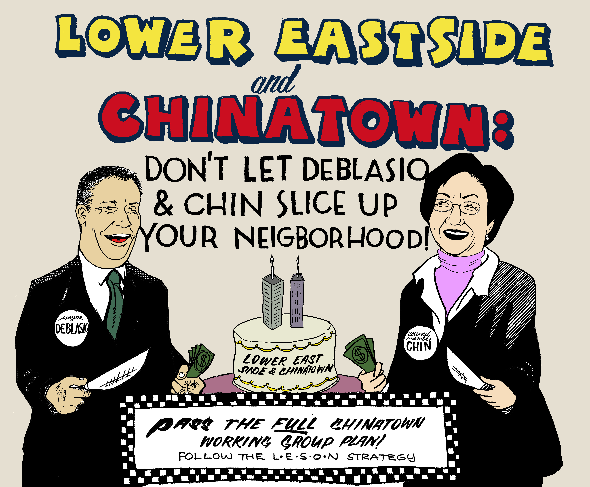
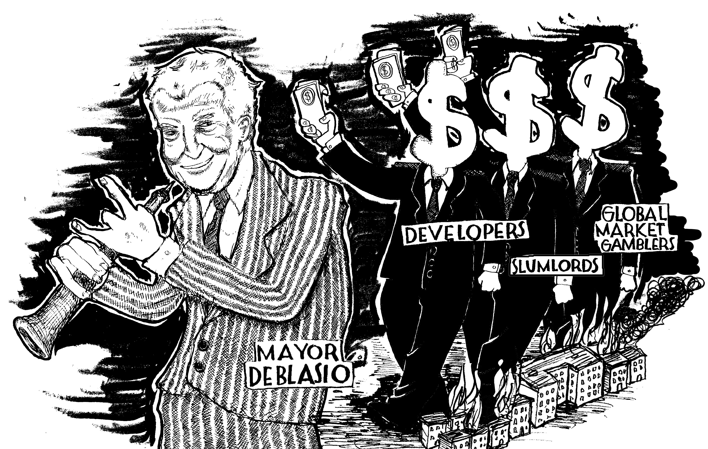
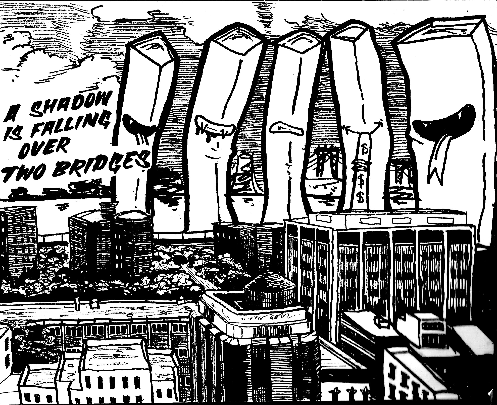
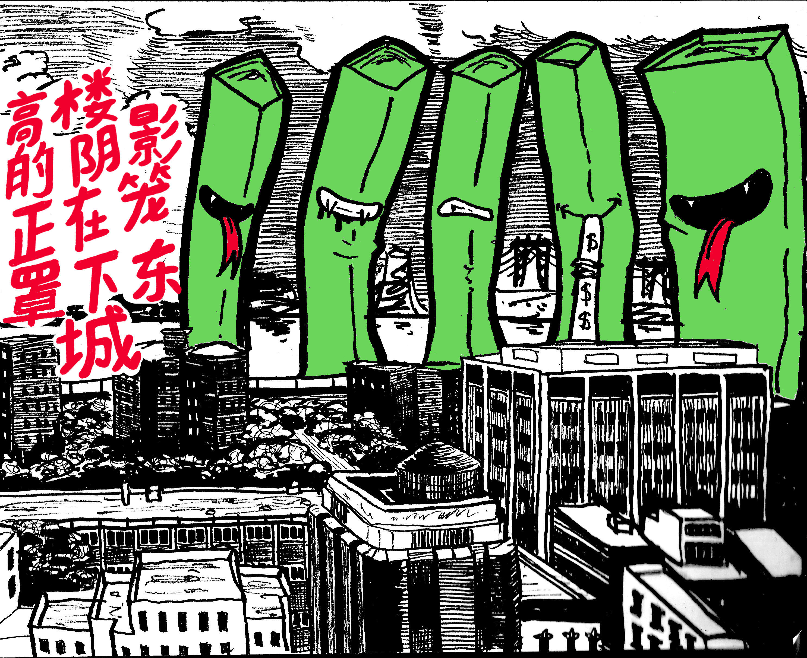
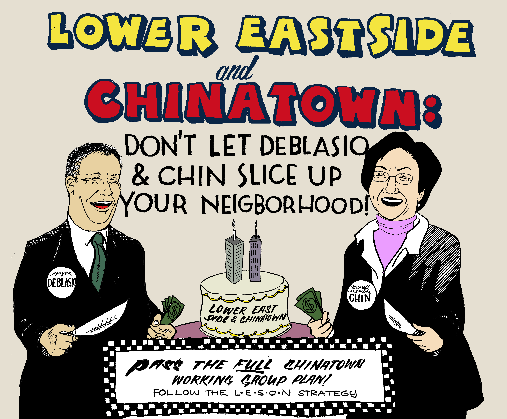
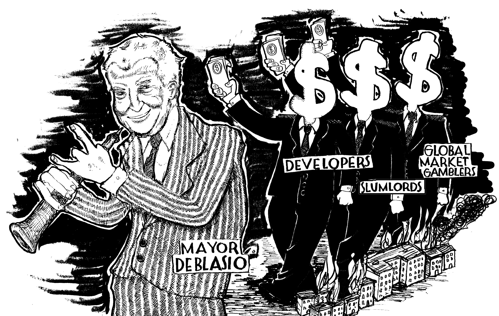
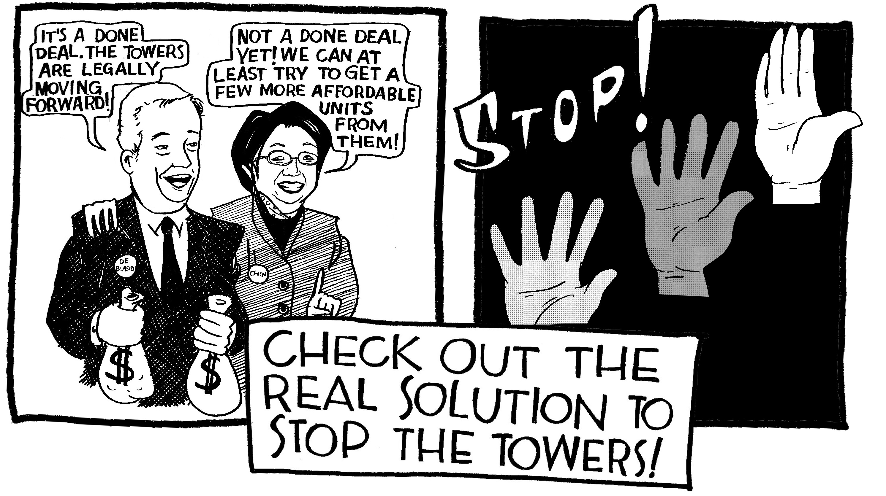
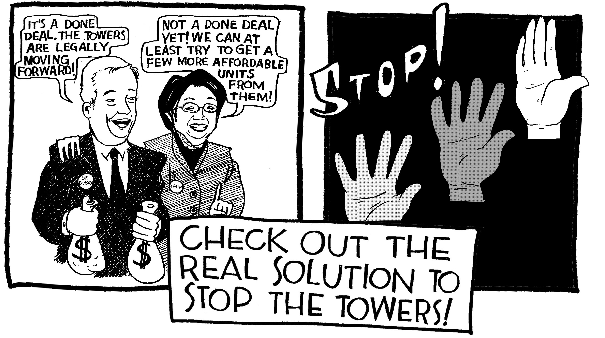

Illustrations for Lower East Side Organized Neighbors
 







 

Every once in a while I do illustrations for the housing advocate group called Lower East Side Organized Neighbors. They are affiliated with the Chinatown Working Group—you can find out more about their plan for protecting the Lower East Side from the excesses of unexamined developmenthere.
Aestheically, when I do these jobs I find myself usually working in a style that resembles the British anarcho-punk albums I used to listen to when I was younger. Oh hell, I still listen to them.